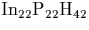

The way we tackle this problem is using the Musgrave-Pople interatomic potential to model the vibrational properties of those bulk atoms for which we do not calculate the energetic double derivatives directly. This can be used in conjunction with the AIMPRO double derivative data for the core defect atoms.
In order to parameterise the potential it is necessary to calculate the double derivatives for a small group of core atoms in a cluster of pure bulk material, and the parameters are then fitted to these derivatives. The Musgrave-Pople potential parameters are calculated from a least-squares fit to the ab initio energy double derivatives, calculated for the core of a fully relaxed bulk cluster. For example, the InP potential parameters given in Section 4.3 were determined using an 86 atom C3v cluster . This was relaxed using AIMPRO, and then the energy double derivatives were calculated for the inner eight atoms, four of each chemical species. This leads to 156 double derivative terms which produces a very accurate fit.
Examples of the application of the MP potential to defect problems is given in Chapter 4, the parameters used for Si are given in Reference [35].